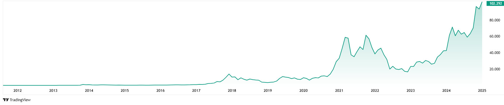

PROGETTAZIONE E REALIZZAZIONE DI UN WEBSITE SU CRIPTOVALUTE
← Opportunità e Impatto economico →
Aspetto fondamentale che è possibile riscontrare in relazione all'impatto che le criptovalute hanno avuto, ed hanno tuttora sull'economia locale, è rappresentato dal loro potenziale nel promuovere l'inclusione finanziaria. In molte regioni del mondo, in particolare in quelle caratterizzate da economie emergenti, persistono significative barriere che limitano l’accesso ai servizi bancari tradizionali. Spesso, comunità rurali o isolate e piccole imprese si trovano escluse dal sistema finanziario globale, con possibilità limitate di accedere a conti bancari, prestiti o altri strumenti finanziari. Grazie alla loro natura decentralizzata, le criptovalute possono contribuire a colmare questo divario, consentendo a milioni di persone di partecipare all'economia digitale senza necessità di una banca tradizionale.
Ciò permette di espandere il mercato, attrarre clienti a livello globale, facilitare transazioni rapide e sicure che favorirscono l’innovazione, stimolando la crescita economica attraverso nuove opportunità di business e l’accesso a mercati precedentemente inaccessibili. Inoltre, molti imprenditori, investitori e aziende considerano il bitcoin un potenziale strumento di protezione contro l'inflazione, grazie alla sua offerta limitata, all’elevata liquidità e al potenziale di crescita del proprio valore.

Fonte: Tradingview. Link:Tradingview.com
Inoltre, l’espansione del settore delle criptovalute ha portato alla nascita di nuove figure professionali, come esperti di sicurezza informatica, sviluppatori blockchain e consulenti finanziari specializzati in criptovalute
Ovviamente non ci sono solo vantaggi nell’adozione delle criptovaluta ma anche numerosi rischi; infatti uno dei problemi principali da valutare in merito all’impiego delle cripotovalute è dovuto alle continue oscillazioni dei prezzi che rendono difficile pianificare le entrate per gli utilizzatori. Un ulteriore ostacolo significativo è stato rappresentato dalla mancanza di una regolamentazione chiara che disciplinasse la materia, dato che qiesta è ancora in fase di sviluppo. Un passo avanti in tal senso è da riscontrarsi nell’emissione del Regolamento EU 2023/1114.
“Il regolamento UE 2023/1114 stabilisce norme uniformi per gli emittenti di cripto-attività che finora non sono stati regolamentati da altri atti dei servizi finanziari dell’Unione europea (Unione) e per i prestatori di servizi relativi a tali cripto-attività (prestatori di servizi per le cripto-attività).
Fonte: eur-lex.europa. Link: eur-lex.europa
Il regolamento si applica all’emissione, all’offerta al pubblico e all’ammissione alla negoziazione di cripto-attività e alla fornitura di servizi relativi alle cripto-attività.
proseguire su Rischi e Impatto Ambientale
Fonte background:Freepik. link:freepik.com